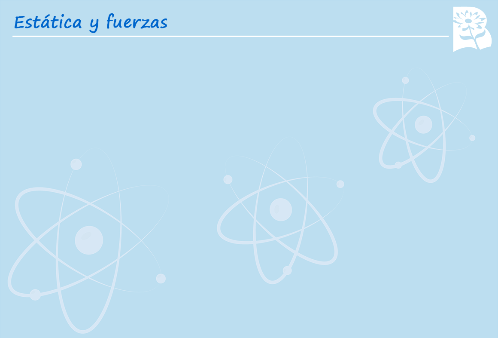

Seleccionar la respuesta correcta.
Una motocicleta tiene una masa de 350 g y una aceleración a razón de 3,2 m⁄s
2
. ¿Cuál es el valor de la fuerza que la impulsó?.
F = 1,12 N
F = 3,12 N
F = 0,12 N
F = 6,12 N